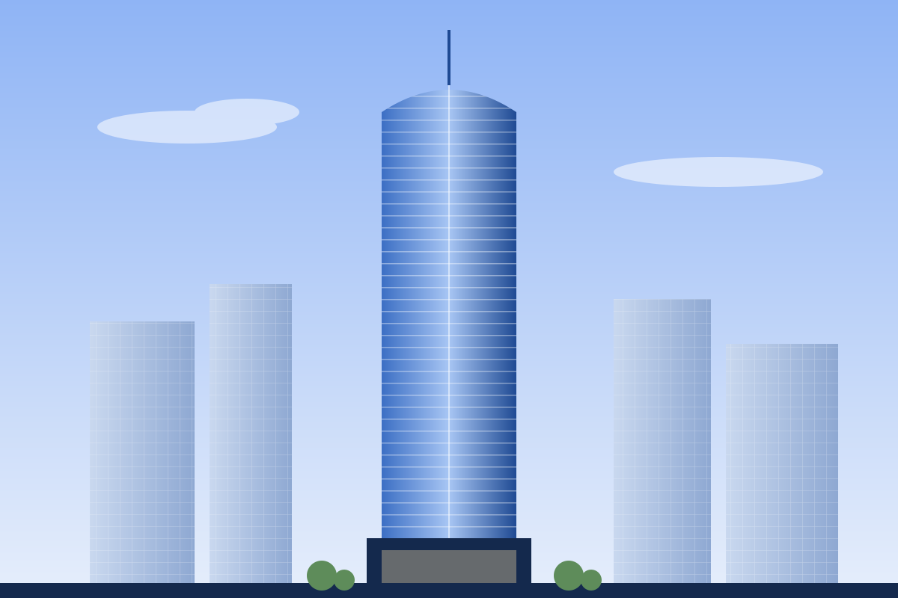
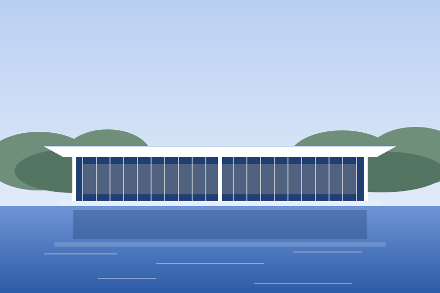
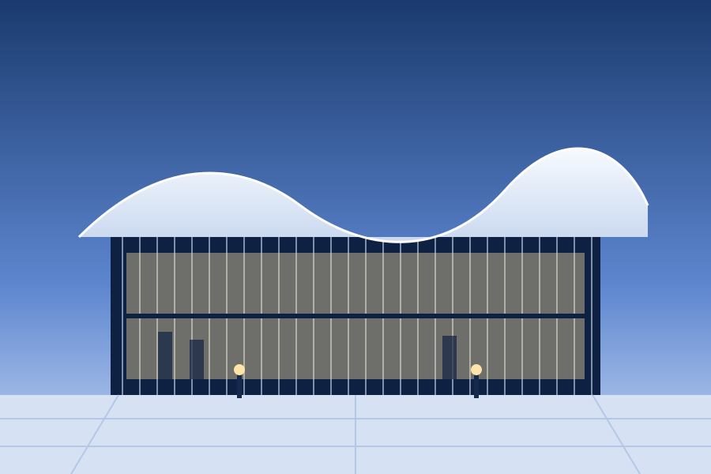
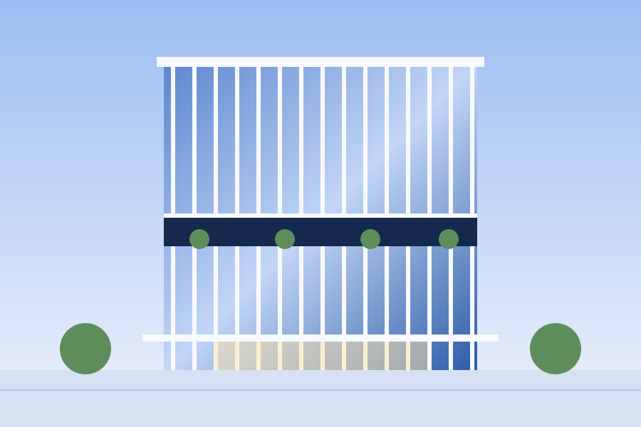
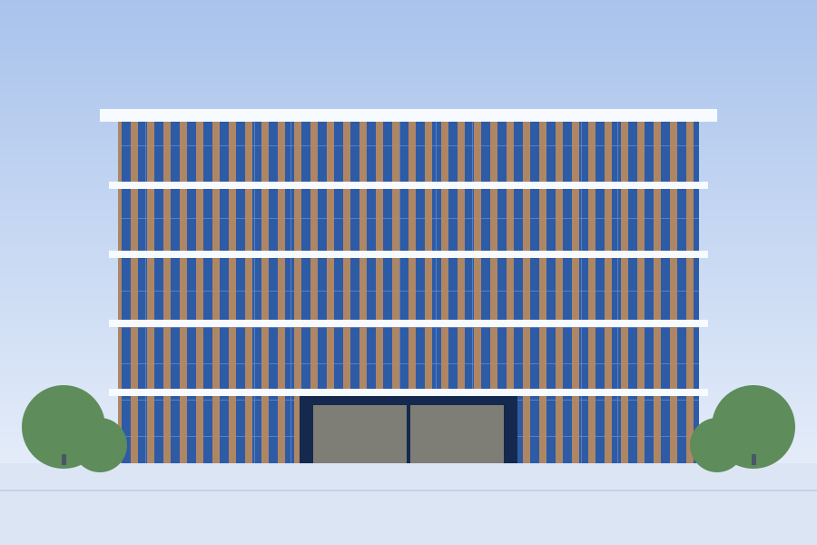
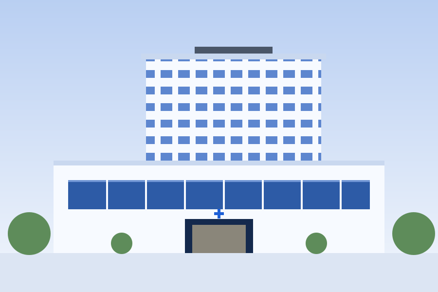
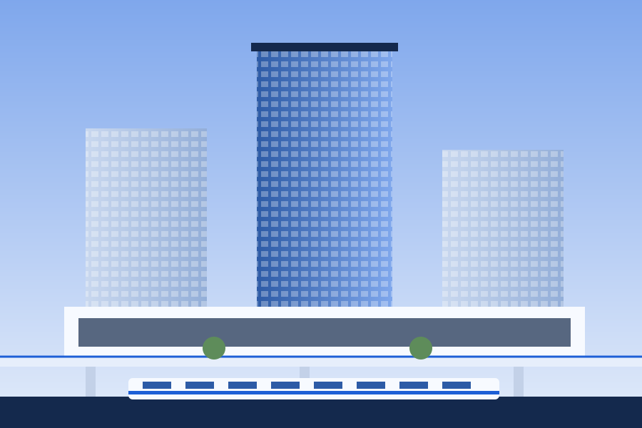
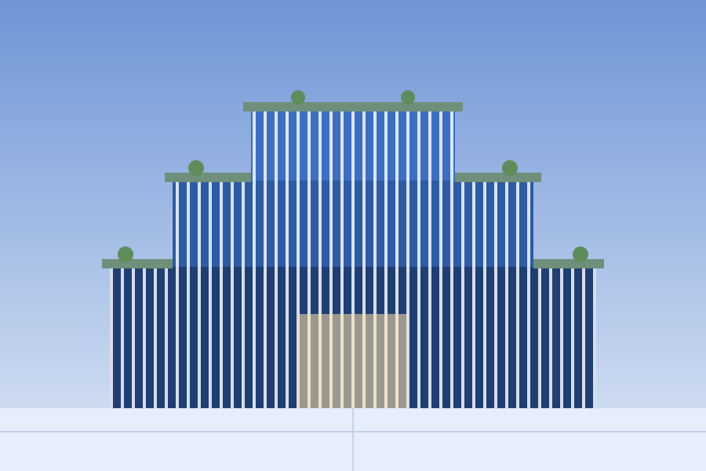
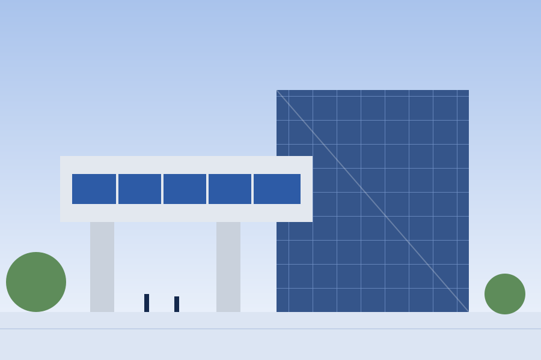

Works 施工実績
超高層ビルから美術館、病院、駅前再開発まで。これまでに手がけた建物の一部をご紹介します。
9件の実績
-

あおば中央タワー
東京都 ／ 地上52階・地下4階 ／ 延床面積 約18万㎡
オフィス・ホテル・商業が入る複合タワー。独自の制震ダンパーを全層に配置し、長周期地震動にも備えています。
-

湖畔の森美術館
滋賀県 ／ 地上2階 ／ 延床面積 約9,800㎡
長さ120mの薄い大屋根が水盤の上に浮かぶ美術館。柱を極限まで細くし、湖と森の景色を室内に取り込みました。
-

みなと音楽ホール
神奈川県 ／ 地上4階 ／ 客席数 1,500席
波をイメージした曲面屋根を、3次元の鉄骨で実現。音響シミュレーションを重ね、どの席でも響きが均一になるよう施工しました。
-

ひばりヶ丘ビジネススクエア
愛知県 ／ 地上18階 ／ 延床面積 約4.6万㎡
中間階に屋外のスカイガーデンを設けたオフィスビル。縦フィンで日射を抑え、ZEB Ready認証（架空）を取得しています。
-

さくら学院大学 中央図書館
京都府 ／ 地上5階 ／ 延床面積 約1.2万㎡
地域産の杉を使った木製ルーバーが特徴。授業期間中の工事のため、騒音の大きい作業は休日に集中させました。
-

あさひ総合医療センター
福岡県 ／ 地上10階 ／ 病床数 480床
免震構造の災害拠点病院。既存病院を運営しながらの建て替えで、患者さんの動線と静けさを最優先に工程を組みました。
-

ひかり台駅前地区 再開発
大阪府 ／ 3棟・地上31階ほか ／ 区域面積 約2.4ha
住宅・商業・公共施設の3棟をデッキで結んだ再開発。駅を利用しながらの工事で、仮設通路を段階的に切り替えました。
-

みどり市 新庁舎
埼玉県 ／ 地上7階 ／ 延床面積 約3.1万㎡
段々状の屋上を緑化した市庁舎。中央の吹き抜けから自然光と風を取り込み、エネルギー消費を抑えています。
-

せいらん工科大学 研究棟
宮城県 ／ 地上6階 ／ 延床面積 約1.5万㎡
精密な実験装置を置くため、床の振動を厳しく管理した研究棟。講義棟は約20mの跳ね出しで広場を覆っています。
※施工実績・建物名・所在地・認証などはすべてデモ用の架空のものです。画像はイメージイラストです。
計画中の建物について、お気軽にご相談ください。
お問い合わせ